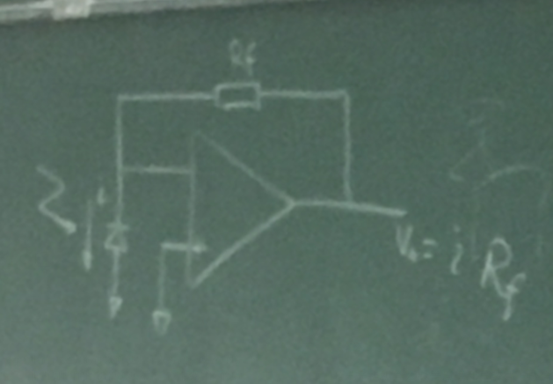
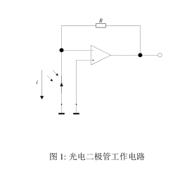
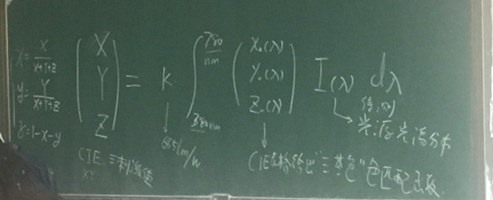

一．
简单叙述图像处理中点变换、代数变换和几何变换的区别
点变换是图像中单一像素的灰度进行变换的方法
代数变换是对两幅或者多幅图像对应像素进行加减乘除的代数运算；
几何变换改变图像中各物体之间的空间关系，也称之为变形？？
二．
简述CCD光电器件基本工作原理，对比CCD探测器和Cmos探测器的性能或结构差别（要指出四点以上差别）

也就是pdf中图
CCD全称电荷耦合器件，对于CCD光电器件， 其中器件中感光部分，通过光照产生光生电荷，此电荷可以通过电注入的方式或者光注入的方式，将光生电荷存储到电荷耦合器件中的势阱中，再由周期性的多路驱动脉冲，产生势阱间的耦合，将存储的电荷包从一个势阱移动到另一个势阱，使之形成时间上串行输出的模拟电荷包信号，达到将一个并行的一维或二维图像信号进行存储及形成串行输出的目的。
CCD器件的主要性能指标有：光谱响应，电荷转移效率，灵敏度，均匀度，工作频率等等
CCD与Cmos的差别：
工作速度（CCD慢，Cmos快）
灵敏度（CCD高，Cmos低）
功耗（CCD高，Cmos低）
工艺结构（Cmos一般采用互补氧化物半导体，CCD一般有Nmos或Pmos结构，不是互补）
三．
简述单镜头反光相机基本取景原理和再胶片上成像过程
单镜头反光相机取景部分由镜头，反光镜，对焦板，场镜，五棱镜，目镜组成。
物体通过镜头，反光镜，在对焦板上形成左右颠倒的影像，再通过场镜和五棱镜，将图像转为直立的正像，再通过目镜放大，方便观察。照相时，反光板抬起，快门打开，物通过镜头
成像在胶片或者CCD上，记录到一个上下左右都颠倒的图像，此时取景器里看不到图像。待曝光完成后，反光板落下，恢复取景状态。
描述色温的物理含义，列举一种测量方法
四．
色温是光源发光的色度数值的一种表达方法，
当光源是黑体时，由普朗克公式，光源温度和色度一一对应。对于一个任意的光源，它不是光源的真正温度。色温的测量可以通过测量光源的色度坐标进行计算。
五．
列出光电二极管的特性指标，并加以解释（不少于三条），给出一个实用的光电二极管的测量电路。
1. 光谱范围，表示光电二极管的工作波长范围以及在此范围内的灵敏度曲线
2. 工作频率，表示光电二极管最大通过频率范围
3. 饱和电流，表示二极管最大饱和电流
4. 偏置电压：表四二极管工作时的偏置电压
六．
简述使用光谱测量色坐标的方法

写出式子和图片中有的对应物理意义
图片中右边式子在左边之后
见Pdf
七．
简述色调、饱和度、亮度三个概念
色调：由光谱中各分量成分的波长来确定，是彩色光的基本特性
饱和度：反映了彩色的浓淡，取决于彩色光中白光的含量
亮度：是指彩色光对人眼引起的光刺激强度
八．
简述图像傅里叶变换和卷积的基本物理意义，及在图像滤波中的应用
图像傅里叶变换的物理意义：将二维空间分布的图像，变换成二维频谱分布，其频谱分布表征了图像中高低频率成分分布的特性。
卷积的物理意义：光学系统的成像过程，是光学系统的点扩散函数和展示图像的二维卷积，得到的最终图像是卷积后的结果。可以通过去卷积算法提高图像清晰度，去除镜头光学系统对图像的影响。
在图像滤波中，通过对图像的频谱适当的处理，低通高通带通等运算，对处理后的频谱进行逆傅里叶变换，得到滤波处理后的图像，从而达到柔化、锐化、复原等效果。
由于图像滤波中的正逆傅里叶变换复杂，可以通过时域空间的卷积处理，代替频域空间的滤波处理，减少处理时间和运算量
图像滤波处理中使用的卷积核，即基于这个原理
九．
描述PDP，LCD，LED，DLP显示技术基本原理
，对比各自优缺点（至少写出三点）
1. PDP原理：采用等离子体发光产生图像
特点：亮度高、耗电大、容易产生大平面。
2. LCD 原理：采用液晶阵列产生图像
特点：功耗低、速度慢、要求背光
3. LED 原理：利用发光二极管阵列产生图像
特点：功耗高、亮度高、成本高
4. DLP 原理：采用微动镜技术，反射式投影成像
特点：速度快、功耗低、适合大屏幕投影
十．
设计一个图像监控系统和相应的图像处理算法，对环境中是否存在运动物体进行监控。
要求：
1. 描述系统使用的硬件设备
2. 如何使算法适应各种运动速度的物体
提示：剪影算法